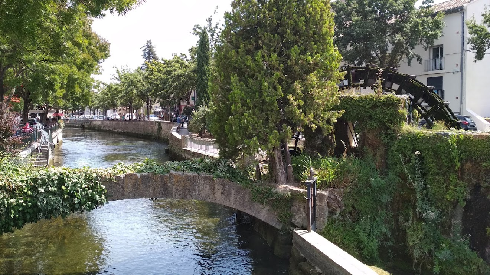
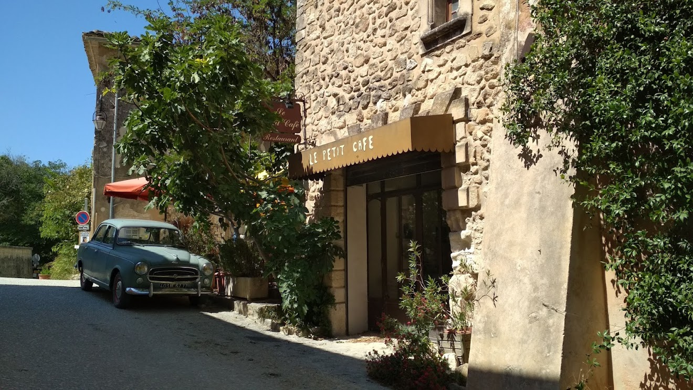
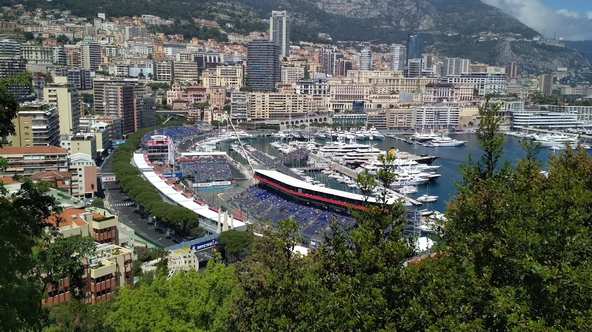
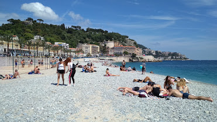
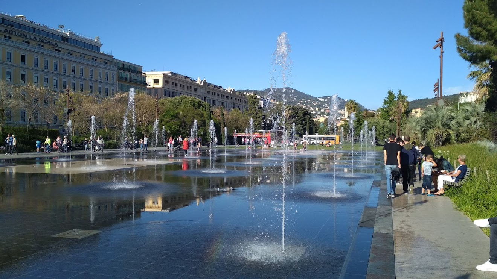
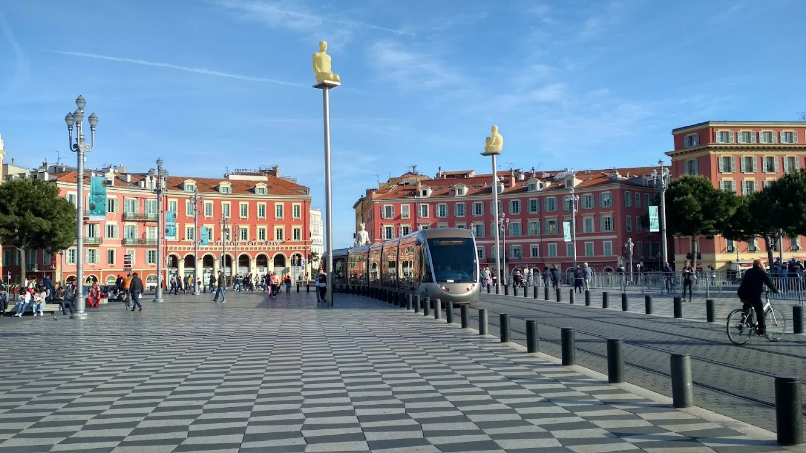

Ahoj, jmenuji se Eva, bydlím ve Žďáře nad Sázavou a pracuji jako konstruktérka ve strojírenské firmě. Již delší dobu uvažuji o změně své profese a díky Czechitas jsem objevila svět IT.
Na jaře letošního roku jsem s Czechitas absolvovala Digitální akademii Testování a uvědomila si, že nejvíce mne na akademii bavilo HTML, ne nadarmo jsem konstruktérka a ráda tvořím. Na poslední chvíli jsem se tedy rozhodla přihlásit na kurz HTML + CSS.
Spoustu let jsem se věnovala závodně ploutvovému plavání a po pár letech pauzy jsem se k tomuto sportu vrátila jako trenérka. Začínala jsem učit plavat malé děti a postupem let se přesunula ke starším žákům a dorostencům, kterým se věnuji dvakrát týdně. Samozřejmě se stále snažím věnovat i sama sportovní aktivitě, několikrát týdně jezdím na kolo, mám ráda turistiku, občas si zaběhám a teď se chystám na půlmaraton.
Miluji cestování, pokud mi to vyjde, alespoň dvakrát ročně vyrazím s rodinou na dovolenou. Mám ráda jak hory, tak moře. Moje nejoblíbenější destinace je Francie, zbožňuji melodii francouzského jazyka a proto se již několik let učím francouzštinu. Cestování do Francie je pro mne trochu odlišné, většinou ho spojím s jazykovým kurzem nebo poznávacím cyklozájezdem.
Pár fotek z cest.
     Pokud máš zájem ozvi se mi na email nebo zavolej.
E-mail: evastylova@seznam.cz
Mobil: +420608868582